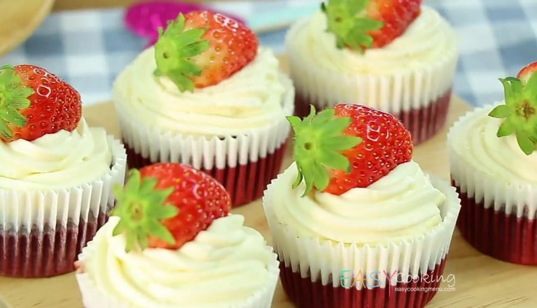

Strawberry Cupcakes

วัตถุดิบ
- แป้งเค้ก 200 กรัม
- แป้งข้าวโพด 1 ช้อนโต๊ะ
- เกลือป่นปริมาณเล็กน้อย
- ผงฟู 1 ช้อนชา
- วานิลลาชนิดผง 1 ช้อนชา
- มาร์การีน 250 กรัม
- น้ำตาลทราย 250 กรัม
- ไข่ไก่ 5 ฟอง
- นมข้นจืด 50 มิลลิลิตร
- น้ำหอมกลิ่นสตรอว์เบอร์รี่ 1 ช้อนชา
Back to Top
วิธีทำ
- ร่อนแป้งเค้ก แป้งข้าวโพด เกลือ ผงฟู และวานิลลาเข้าด้วยกัน
- ตีมาร์การีนกับน้ำตาลจนขึ้นฟู ใส่ไข่ไก่แล้วผสมให้เข้ากัน
- เติมส่วนผสมแป้ง นมข้นจืด น้ำหอมกลิ่นสตรอว์เบอร์รี่ และสีผสมอาหาร
- ใส่สตรอว์เบอร์รี่ในน้ำเชื่อม ตักใส่พิมพ์ และอบที่ 170°C
คุณค่าทางอาหาร
- แป้ง น้ำตาล ให้พลังงานแก่ร่างกาย
- ไข่ นม ให้โปรตีนช่วยเสริมสร้างเซลล์
- เนย ไขมัน ช่วยให้ผิวพรรณสดใส
| สารอาหาร |
ปริมาณ |
หน่วย |
| โปรตีน |
3.5 |
g |
| ไขมัน |
8.5 |
g |
| คาร์โบไฮเดรต |
35 |
g |
References
ข้อมูลเพิ่มเติมสามารถดูได้ที่
See More
Comment